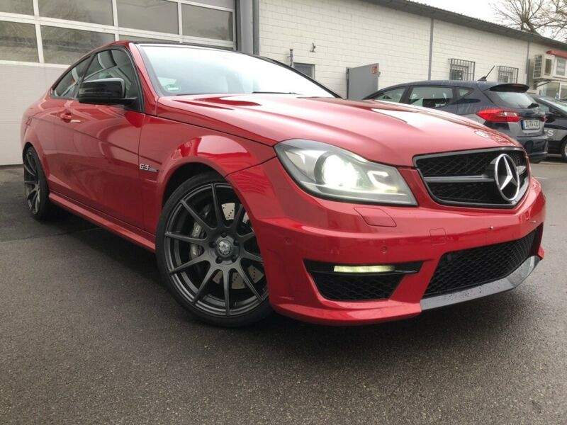
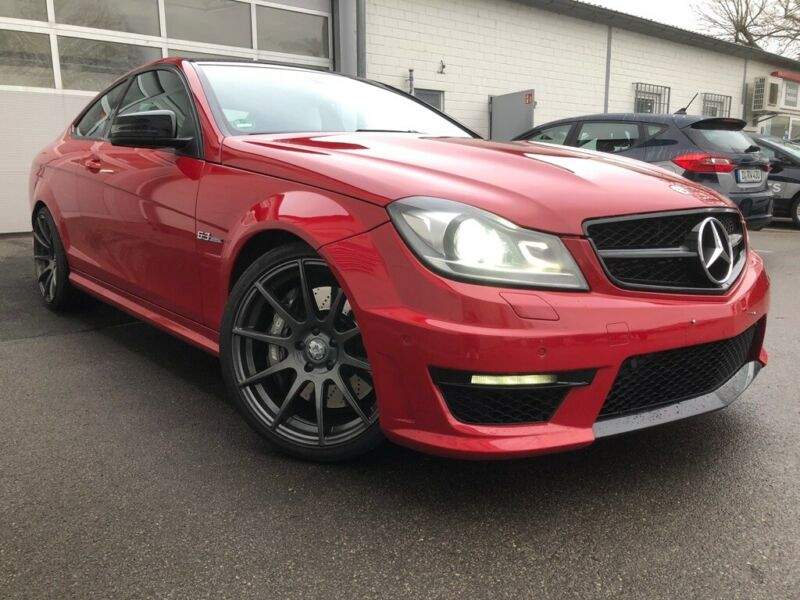
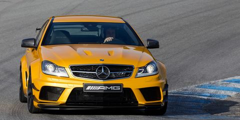
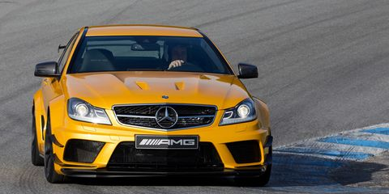

Pentru pasionați
Pentru unii doar mijlocul de deplasare zilnică,pentru alții porția de adrenalină din weekend, mașina a cunoscut o evoluție impresionantă de-a lungul secolelor, de la Ford Model T al lui Henry Ford sau beetle-ul lui Ferdinand Porsche, la adevărate bijuterii pe 4 roți din epoca contemporană. Mașinile in secolul vitezei sunt din ce in ce mai variate si se pliază cu atât mai bine pe nevoile cumpărătorilor. Dacă celelalte secțiuni erau, in mare parte, dedicate oamenilor obișnuiți ale căror pretenții se opreau la interioare luxoase sau consum redus de carburant, iată 10 dintre mașinile din ultimii ani care merită atenția unui public pasionat de sporturi cu motor. Țin să menționez că nu am putut include toate modelele impresionante care mi au luat ochii la saloanele auto, însă mi am dat silința să vă răsfăț gusturile in automobile cu un top mult mai variat decât ce ați văzut până acum.
Sper că îți vor plăcea alegerile mele :)))
Mercedes C63 AMG 2009-2016
 


 



La fel de stylish ca limuzina germană cu care te-ai obișnuit, Mercedes-Benz propune o viziune nouă asupra modelului C-klasse, mai joasă, mai lată și mai agresivă. Schimbările cosmetice sunt puține, dar suficiente cât să ofere o siluetă ușor de recunoscut. Cu un monstru V8 sub capotă, aripi lățite, spoiler pe portbagaj și o grilă larg deschisă pentru cât mai multă răcire, C63 este rețeta perfectă pentru o mașină pentru pasionați. Adept al zicalei din Detroit:"There is no substitute for cubic displacement", AMG a reușit să pună un V8 aspirat natural de 6.2 litri asamblat manual sub capota sedanului de clasă B. Numerele sunt prodigioase - 451cp și un cuplu de 443Nm, iar sunetul pe care îl produce evacuarea se ridică la nivelul așteptărilor........(poza cu break)......Disponibil atât în caroserie break, coupe și sedan, C63 este gata să satisfacă nevoile cumpărătorilor, mai ales că acum un exemplar în stare bună poate fi găsit la un preț pornind de la 20.000 euro pe piața automobilelor rulate.